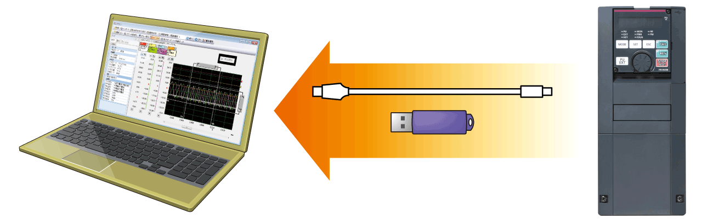

Seri Inverters-FREQROL FR-A800 KEAMANAN & KESELAMATAN

KEAMANAN & KESELAMATAN
Pemulihan cepat dipastikan dengan mencegah masalah sebelumnya.
FR-A800 telah dikembangkan dengan mengutamakan keandalan dan keselamatan.
Respon cepat diperoleh ketika terjadi masalah yang tidak terduga.
Peningkatan keamanan sistem
Kepatuhan terhadap standar keselamatanBARU
Kontrol dengan fungsi keselamatan dapat dilakukan dengan mudah.
Fungsi keselamatan Safe Torque Off (STO) didukung oleh inverter. Inverter dengan fungsi keselamatan dapat mematuhi standar keselamatan tanpa mengeluarkan banyak biaya.
● PLe dan SIL3 didukung sebagai standar.
- ISO13849-1:2015 Kategori 3/PLe
- IEC62061:2015 / IEC61800-5-2:2016 / IEC61508:2010 SIL3
- *1Komunikasi keselamatan tersedia antara pengontrol terprogram keselamatan dan modul I/O jarak jauh.
- *2Satu MC diperlukan untuk mematikan daya saat fungsi perlindungan diaktifkan.
Perawatan yang andal dan aman
Catu daya standar 24 VDC untuk sirkuit kontrol BARU
Selain terminal masukan catu daya yang ada (R1 dan S1) dari sirkuit kontrol, masukan 24 VDC dilengkapi sebagai standar.
Daya 24 VDC yang dipasok dari luar dapat disalurkan ke sirkuit kontrol secara lokal, yang memungkinkan pengaturan parameter, operasi komunikasi, dan perawatan keselamatan tanpa menyalakan daya utama.
Pencegahan masalah dengan pemantauan suhu BARU
Inverter dilengkapi dengan sensor suhu internal, yang mengeluarkan sinyal saat suhu sekitar tinggi.
Hal ini memudahkan pendeteksian kenaikan suhu di dalam inverter setelah kipas pendingin tidak berfungsi, atau kenaikan suhu sekitar akibat kondisi pengoperasian inverter.
Komponen dengan masa pakai panjang dan fungsi pemeriksaan masa pakai
Komponen dengan masa pakai panjang
- Masa pakai kipas pendingin kini 10 tahun*3.
Masa pakai dapat diperpanjang lebih lanjut dengan kontrol ON/OFF kipas pendingin. - Kapasitor dengan masa pakai desain 10 tahun*3*4disesuaikan.
Dengan kapasitor ini, masa pakai inverter lebih lama. - Perkiraan masa pakai komponen dengan masa pakai panjang.
| Components | Estimated lifespan of the FR-A800*3 | Guideline of JEMA*5 |
|---|---|---|
| Cooling fan | 10 years | 2 to 3 years |
| Main circuit smoothing capacitor | 10 years*4 | 5 years |
| Printed board smoothing capacitor | 10 years*4 | 5 years |
- *3Suhu udara sekitar: Rata-rata tahunan 40˚C (bebas dari gas korosif, gas mudah terbakar, kabut oli, debu, dan kotoran).
Masa pakai desain adalah nilai terhitung dari peringkat LD dan bukan masa pakai produk yang terjamin. - *4Arus keluaran: 80% dari peringkat LD inverter
- *5Kutipan dari “Pemeriksaan berkala inverter transistor” dari JEMA (Asosiasi Produsen Listrik Jepang).
Peningkatan fungsi diagnosis kehidupan
- Sensor termal internal dipasang pada semua inverter sebagai standar, yang memungkinkan pemantauan lingkungan instalasi.
Gunakan fungsi ini sebagai panduan untuk diagnosis masa pakai. BARU - Pengatur waktu perawatan tersedia untuk hingga tiga perangkat periferal, seperti motor dan bantalan.
Peringatan "Keluaran Pemeliharaan 1"
Reaksi cepat terhadap masalah
Diagnosis kesalahan yang mudahBARU
- Status pengoperasian (frekuensi keluaran, dll.) tepat sebelum fungsi perlindungan diaktifkan dapat disimpan dalam RAM internal inverter dengan fungsi pelacakan. Data yang tersimpan (data jejak) dapat disalin ke perangkat memori USB atau langsung diimpor ke komputer, sehingga memudahkan analisis masalah menggunakan perangkat lunak pengaturan inverter (FR Configurator2).
Data jejak yang tersimpan dalam RAM internal dihapus saat daya dimatikan atau inverter disetel ulang.
 - Pengaturan jam kini tersedia sebagai tambahan waktu pengaktifan kumulatif yang sudah tersedia. Waktu dan tanggal pada aktivasi fungsi proteksi mudah diidentifikasi. (Jam disetel ulang saat daya dimatikan.) Tanggal dan waktu juga disimpan dengan data jejak, sehingga memudahkan analisis kesalahan.
Dengan menggunakan fungsi jam waktu nyata dengan panel operasi layar kristal cair (LCD) opsional (FR-LU08) (saat menggunakan baterai), waktu tidak disetel ulang bahkan saat catu daya dimatikan.
Cadangkan/pulihkan
GOT dapat digunakan untuk mencadangkan pengaturan parameter inverter dan data yang digunakan dalam fungsi PLC inverter, dan cadangan yang disimpan dalam GOT dapat digunakan untuk memulihkan data dalam inverter.
Jaminan pembaruan
Interkompatibilitas dengan model yang ada
- Metode pemasangan inverter sama dengan seri FR-A700, sehingga tidak perlu khawatir lagi saat menggantinya.
Selain itu, blok terminal rangkaian kontrol seri FR-A700 dapat dipasang dengan menggunakan opsi (FR-A8TAT). - Fungsi penyesuaian respons terminal memungkinkan pengguna untuk menyesuaikan kecepatan respons sesuai dengan fasilitas yang ada.
- Fungsi konversi Perangkat Lunak Pengaturan Inverter (FR Configurator2) memungkinkan penyalinan parameter dari FR-A700 dan bahkan dari FR-A500 (akan segera didukung).
Alasan untuk kualitas tinggi
Desain yang mempertimbangkan lingkungan yang berbahaya
Analisis getaran 3D dilakukan untuk mengonfirmasi ketahanan getaran. Analisis ini juga berguna untuk menemukan posisi tata letak terbaik dan untuk lebih meningkatkan kekakuan produk.
Dengan asumsi kondisi layanan yang berbahaya, keandalan produk dinilai secara menyeluruh pada tahap desain. Setiap upaya dilakukan untuk memastikan kualitas terbaik dari inverter Mitsubishi Electric.*6
Analisis getaran 3D
Kontrol panas untuk kualitas tinggi
Ketahanan terhadap panas adalah hal yang membuat inverter dapat diandalkan.
Modul daya tahan panas yang dirancang dengan baik sangat penting dalam inverter yang andal. Sejak tahap desain modul daya, ketahanan panasnya dipertimbangkan dengan saksama.*6
Analisis hidrolik dan simulasi panas
*6Penggunaan di luar kondisi layanan yang ditentukan produk tidak dijamin.